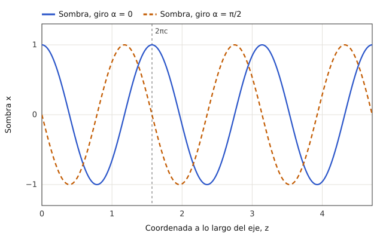
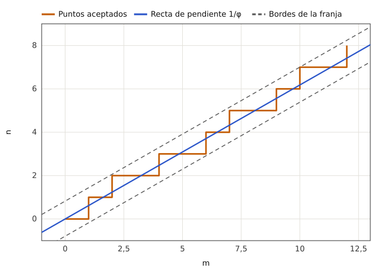
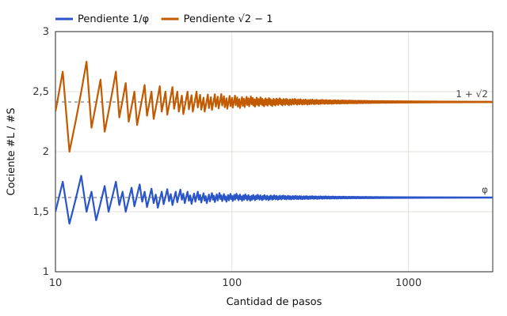
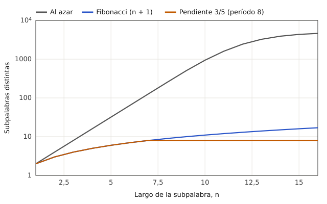

Preprint · documento de trabajo sin revisión por pares
Sombras de la simetría: simetrías discretas como proyecciones, cortes y secciones de simetrías continuas en una dimensión más
Shadows of symmetry: discrete symmetries as projections, slices and sections of continuous symmetries in one more dimension
Bruno Loiacono · Estudiante de Física, Universidad de Buenos Aires · Noviembre de 2026
Resumen
Una simetría discreta en $n$ dimensiones puede ser la sombra de una simetría continua en $n+1$. Este trabajo reúne en un solo marco cuatro operaciones que producen esa sombra: la proyección (una onda es la sombra lateral de una hélice, y su período discreto viene de una simetría de tornillo continua), el corte (una cadena cuasiperiódica es un corte de la red cuadrada con pendiente irracional, la versión más simple del método que explica los mosaicos de Penrose y los cuasicristales), la sección (un mapa discreto es la sección de Poincaré de un flujo continuo) y la inclusión de grupos (un reflejo en el plano es un giro en el espacio). Con cálculos reproducibles se muestra que la cadena de pendiente $1/\varphi$ coincide con la palabra de Fibonacci, tiene exactamente $n+1$ subpalabras de largo $n$ y nunca repite su patrón, mientras que la de pendiente $3/5$ coincide con ella en sus primeros 16 pasos y se repite cada 8. Se discuten la quiralidad, la paridad, el aliasing como sombra que pierde información, y la pregunta de Kaluza–Klein: si subir una dimensión para volver continua una simetría trae consigo una cantidad conservada.
Abstract
A discrete symmetry in $n$ dimensions can be the shadow of a continuous symmetry in $n+1$. This paper brings into one framework four operations that cast such a shadow: projection (a wave is the side shadow of a helix, and its discrete period comes from a continuous screw symmetry), slicing (a quasiperiodic chain is a slice of the square lattice with irrational slope, the simplest version of the method that explains Penrose tilings and quasicrystals), sections (a discrete map is the Poincaré section of a continuous flow) and group inclusion (a reflection in the plane is a rotation in space). Reproducible calculations show that the chain with slope $1/\varphi$ coincides with the Fibonacci word, has exactly $n+1$ subwords of length $n$ and never repeats, while the chain with slope $3/5$ agrees with it for its first 16 steps and repeats every 8. Chirality, parity, aliasing as a shadow that loses information, and the Kaluza–Klein question, whether lifting a symmetry to one more dimension brings a conserved quantity with it, are discussed.
Palabras clave: simetría; corte y proyección; cuasicristales; palabras sturmianas; quiralidad; teorema de Noether.
Keywords: symmetry; cut and project; quasicrystals; Sturmian words; chirality; Noether's theorem.
1. Introducción
La idea de este trabajo se puede decir en una oración: una simetría discreta en $n$ dimensiones puede ser la sombra de una simetría continua en $n+1$. Lo que se ve a saltos, como una onda que se repite cada tanto, una cadena que alterna patrones o una figura que solo coincide con su reflejo si se la da vuelta, puede ser la huella de algo suave en un espacio más grande.
La idea no pertenece a un solo campo. Aparece en el análisis de Fourier, en cristalografía, en sistemas dinámicos, en física de partículas y en la geometría de los reflejos. El aporte de este trabajo no es un teorema nuevo sino un mapa: mostrar en un solo lugar que una misma operación conceptual organiza resultados conocidos de esas áreas, y calcular con ejemplos reproducibles sus propiedades principales. La sección 2 define simetría y resume la historia de cada caso. La sección 3 formula las cuatro operaciones que producen una sombra. La sección 4 calcula los ejemplos. La sección 5 discute cuándo la sombra conserva la información, cuándo no, y la pregunta de Kaluza–Klein.
2. Antecedentes
2.1. Qué es una simetría
En el programa de Erlangen, Felix Klein propuso que cada geometría se define por un grupo de transformaciones y que estudiarla es estudiar lo que esas transformaciones no cambian (Klein 1893). Una simetría de un objeto es una transformación que lo deja igual, y las simetrías de un objeto forman un grupo. El grupo puede ser continuo, como los giros de cualquier ángulo de una circunferencia, o discreto, como los giros de $90^\circ$ de un cuadrado o las traslaciones enteras de una red. Weyl (1952) escribió la introducción clásica al tema, de los frisos griegos a los cristales. En física, Noether (1971) demostró que a cada simetría continua de las leyes le corresponde una cantidad conservada: energía, momento, momento angular. Las simetrías discretas no dan cantidades conservadas de esa manera.
2.2. Hélices y ondas
La hélice es una de las formas más comunes en biología, y su sombra fue decisiva en el descubrimiento de la estructura del ADN. Cochran et al. (1952) calcularon cómo difracta los rayos X una hélice de átomos: el patrón tiene forma de X. Esa X estaba en la fotografía de difracción del ADN de Franklin y Gosling (1953), publicada junto con el modelo de doble hélice de Watson y Crick (1953). Pauling et al. (1951) había propuesto la hélice $\alpha$ de las proteínas, con 3,6 aminoácidos por vuelta: una simetría de tornillo continua realizada de forma discreta, porque las unidades vienen de a una.
2.3. Cristales y cuasicristales
Un cristal periódico solo puede tener ejes de giro de orden 1, 2, 3, 4 o 6: la simetría de orden 5 es incompatible con la periodicidad. Shechtman et al. (1984) observaron en una aleación de aluminio y manganeso un patrón de difracción con puntos nítidos y simetría icosaédrica, imposible para un cristal periódico, y Levine y Steinhardt (1984) acuñaron el término cuasicristal. Bindi et al. (2009) encontraron un cuasicristal natural en una muestra de origen meteorítico, una búsqueda que Steinhardt (2019) contó en un libro.
Antes, la matemática ya tenía ejemplos de orden sin período. Wang (1961) preguntó si todo conjunto de baldosas que cubre el plano lo hace también periódicamente; Berger (1966) mostró que no y que el problema es indecidible, con un conjunto enorme de baldosas, y Robinson (1971) lo redujo a seis. Penrose encontró conjuntos de dos baldosas, popularizados por Gardner (1977), y Smith et al. (2024) encontraron en 2023 una sola pieza que solo cubre el plano de manera no periódica. de Bruijn (1981) mostró que los mosaicos de Penrose son cortes de la red periódica de cinco dimensiones proyectados sobre un plano con inclinación irracional, y Kramer y Neri (1984) y Duneau y Katz (1985) generalizaron el método de corte y proyección a la cristalografía. Merlin et al. (1985) crecieron superredes de semiconductores siguiendo la secuencia de Fibonacci: un cuasicristal unidimensional artificial.
2.4. Palabras, frecuencias y aproximaciones
Morse y Hedlund (1940) desarrollaron la teoría de las palabras sturmianas, que son las codificaciones de rectas de pendiente irracional; Lothaire (2002) les dedica un capítulo. Weyl (1916) demostró que una recta de pendiente irracional enrollada en un toro se equidistribuye, y Bohr (1925) desarrolló la teoría de las funciones casi periódicas, el marco analítico del fenómeno. Hurwitz (1891) demostró que el número de oro es el irracional peor aproximable por fracciones; Douady y Couder (1992) reprodujeron con un experimento físico la filotaxis, donde un ángulo relacionado con $\varphi$ minimiza superposiciones.
2.5. Secciones, muestreo y reflejos
Poincaré (1892) introdujo la sección que lleva su nombre: registrar solo los cruces de una trayectoria continua con una superficie fija convierte un flujo en un mapa discreto. Registrar un giro a intervalos fijos es otra sección, y Nyquist (1928) y Shannon (1949) establecieron cuándo el muestreo permite reconstruir la señal.
Un reflejo es la simetría discreta por excelencia: no hay medio reflejo. Möbius (1827) señaló que dos figuras planas especulares no se pueden superponer moviéndolas en el plano, pero sí girando una por la tercera dimensión. Lee y Yang (1956) notaron que nadie había comprobado que la interacción débil respetara la paridad, y Wu et al. (1957) mostraron con núcleos de cobalto 60 que no la respeta. Gardner (1964) contó esa historia. Klein (1926) mostró que, si el espacio-tiempo tiene una quinta dimensión enrollada, como en la teoría de Kaluza de 1921 (Kaluza 2018), el momento en esa dimensión se comporta como la carga eléctrica.
3. Marco: cuatro maneras de producir una sombra
Las longitudes se miden en unidades arbitrarias $\ell$ (el paso de la red en el caso del corte) y los ángulos en radianes. Todas las cadenas y conteos son adimensionales.
3.1. Proyección: la hélice
La hélice de radio $r$ y avance $c$ por radián, ambos en unidades de $\ell$, es
Girarla un ángulo $\alpha$ alrededor del eje $z$ lleva el punto de parámetro $\theta$ al de parámetro $\theta + \alpha$ corrido $-c\alpha$ en $z$: girar $\alpha$ y avanzar $c\alpha$ la deja igual, para cualquier $\alpha$. Es la simetría de tornillo, continua. Su sombra sobre el plano $xz$ es
donde $z/c$ es adimensional, como corresponde al argumento de un coseno, y $x$ tiene las unidades de $r$. Un giro en tres dimensiones es una traslación de la sombra, y la sombra solo coincide consigo misma si se la corre un múltiplo de $2\pi c$: su simetría es discreta. La fórmula de Euler, $e^{i\theta} = \cos\theta + i\sin\theta$, dice lo mismo en el plano complejo, y el análisis de Fourier extiende la idea a toda función periódica como suma de sombras de giros uniformes.
3.2. Corte: la red cuadrada
Se toma la red $\mathbb Z^2$ de puntos $(m, n)$ y una recta por el origen de ángulo $\alpha$ y pendiente $\tan\alpha$. Cada punto tiene una coordenada a lo largo de la recta y otra perpendicular,
Se aceptan los puntos con $u$ en una ventana $[u_0, u_0 + w)$ de ancho
que es la sombra del cuadrado unidad sobre la dirección perpendicular. Con esa ventana, entre dos puntos aceptados consecutivos el paso es siempre $(1, 0)$ o $(0, 1)$: proyectados sobre la recta, miden $L = \cos\alpha$ y $S = \sin\alpha$. El resultado es una cadena de letras L y S. Como el camino escalonado sigue a la recta,
Si la pendiente es racional, $p/q$ en términos mínimos, la recta vuelve a pasar por un punto de la red después de $q$ pasos L y $p$ pasos S, y la cadena es periódica con período
Si es irracional, nunca vuelve, y la cadena es cuasiperiódica: ordenada pero sin período. Sus dos propiedades características son la complejidad mínima entre las no periódicas,
donde $\mathcal C(n)$ es la cantidad de subpalabras distintas de largo $n$, y el balance: en dos tramos del mismo largo, la cantidad de S difiere a lo sumo en uno (Morse y Hedlund 1940; Lothaire 2002).
3.3. Fibonacci y el número de oro
Para la pendiente $1/\varphi$, con $\varphi = (1+\sqrt5)/2$, la cadena se genera también por la sustitución
donde $F_j$ son los números de Fibonacci ($F_1 = F_2 = 1$). La fracción continua de $1/\varphi$ tiene todos sus términos iguales a 1, y sus convergentes son cocientes de Fibonacci: $1/2$, $2/3$, $3/5$, $5/8, \dots$ Cada convergente $F_k/F_{k+1}$ da una cadena periódica, de período $F_{k+2}$ por la ecuación \eqref{eq:periodo}, que coincide con la de $1/\varphi$ en un tramo inicial cada vez más largo. Por el teorema de Hurwitz (1891), para todo irracional $x$ hay infinitas fracciones con
y la constante $\sqrt5$ no se puede mejorar justamente por $\varphi$: es el número peor aproximable.
3.4. Sección: la rotación del círculo
La recta de pendiente $\tan\alpha$ enrollada en el toro, registrada en sus cruces con un lado, da la rotación del círculo
con $a$ relacionado con la pendiente. Si $a$ es racional, cada punto vuelve; si es irracional, la órbita es densa y equidistribuida (Weyl 1916), y anotar si $x_k$ cae en $[0, a)$ o en $[a, 1)$ da una palabra sturmiana. Corte y proyección, flujo en el toro y rotación del círculo son el mismo objeto. Un giro continuo de frecuencia $f$ registrado a una frecuencia de muestreo $f_{\mathrm s}$ es otra sección, y aparenta una frecuencia
en hercios, igual a $f$ solo si $f_{\mathrm s} > 2f$ (Nyquist 1928; Shannon 1949).
3.5. Inclusión de grupos: el reflejo
Un reflejo del plano, $(x, y) \mapsto (-x, y)$, tiene determinante $-1$: está en $O(2)$ pero no en el grupo de giros $SO(2)$. En tres dimensiones, el giro de ángulo $\theta$ alrededor del eje $y$ lleva un punto del plano $z = 0$ a
y para $\theta = \pi$ da $(-x, y, 0)$: el reflejo. Es un elemento de $SO(3)$, con determinante $+1$. Los reflejos de $n$ dimensiones son restricciones de giros de $n+1$, y la simetría discreta del reflejo es la sombra de la continua del giro, que se puede hacer de a poco pasando por $\theta = \pi/2$, donde la figura se ve de canto.
4. Resultados
Todas las cifras salen de paper/figuras/generar.js.
4.1. La hélice
Con $r = 1\,\ell$ y $c = 0{,}25\,\ell$ por radián, el período de la sombra es $2\pi c = 1{,}571\,\ell$, y un giro de $90^\circ$ corre la onda $c\pi/2 = 0{,}393\,\ell$, un cuarto de período (figura 1). La ecuación \eqref{eq:sombra} reproduce los puntos de la sombra calculados por rotación con error nulo a la precisión de la máquina.

4.2. Corte y proyección
La figura 2 muestra la construcción para la pendiente $1/\varphi$. La tabla 1 resume las cadenas obtenidas para cinco pendientes, con unos 400 pasos. El cociente $\#L/\#S$ se acerca a la inversa de la pendiente, como pide la ecuación \eqref{eq:frecuencias}, y las pendientes racionales dan los períodos de la ecuación \eqref{eq:periodo}: 3 para $1/2$, 5 para $2/3$, 8 para $3/5$. Para las irracionales no se encuentra ningún período de hasta 100 pasos. Con 3000 pasos, el cociente vale 1,618 para $1/\varphi$ y 2,413 para $\sqrt2 - 1$, frente a $\varphi = 1{,}618$ y $1 + \sqrt2 = 2{,}414$ (figura 3).

| Pendiente | L | S | L/S | Período | Comienzo |
|---|---|---|---|---|---|
| $1/\varphi \approx 0{,}618$ | 247 | 153 | 1,614 | ninguno $\le 100$ | LSLSLLSLLSLSLLSLSLL |
| $\sqrt2 - 1 \approx 0{,}414$ | 283 | 117 | 2,419 | ninguno $\le 100$ | LSLLLSLLSLLSLLLSLLS |
| $1/2$ | 267 | 134 | 1,993 | 3 | LSLLSLLSLLSLLSLLSLL |
| $2/3$ | 240 | 160 | 1,500 | 5 | LSLSLLSLSLLSLSLLSLS |
| $3/5$ | 250 | 150 | 1,667 | 8 | LSLSLLSLLSLSLLSLLSL |

4.3. La palabra de Fibonacci
La cadena de pendiente $1/\varphi$ es un tramo de la palabra generada por la sustitución \eqref{eq:sustitucion}, que empieza en la posición 126; los largos de $\sigma^k(\mathrm L)$ son 1, 2, 3, 5, 8, 13, 21, 34, 55 y 89. En los primeros 5000 caracteres de la palabra no aparecen ni SS ni LLL, la cantidad de subpalabras distintas de largo $n = 1, \dots, 10$ es exactamente $n + 1$, y el desbalance entre tramos del mismo largo, hasta largo 50, nunca supera 1. La cadena de $3/5$, una convergente de $1/\varphi$, coincide con la de $1/\varphi$ en sus primeros 16 pasos y después se repite cada 8. Su complejidad crece como $n + 1$ hasta $n = 7$ y se queda en 8 (figura 4): es la firma de una cadena periódica.

4.4. Muestreo y reflejo
Una rueda de 12 rayos filmada a 24 cuadros por segundo muestra el aliasing de la ecuación \eqref{eq:alias}: a 1,9 vueltas por segundo los rayos pasan a 22,8 Hz y la rueda aparenta girar hacia atrás a 0,1 vueltas por segundo; a 2 vueltas por segundo parece quieta; a 2,1, avanza lento. Aplicando la ecuación \eqref{eq:giro} con $\theta = \pi$ a los vértices de una letra F se obtiene su imagen especular, con la coordenada fuera del plano de vuelta en cero.
5. Discusión y limitaciones
5.1. Cuándo la sombra conserva la información
La hélice puede recuperarse de su sombra si se sabe que es una hélice, y la pendiente de la red, de las frecuencias de la cadena. Pero un muestreo demasiado lento pierde información de manera irreversible: la rueda de la sección anterior parece girar hacia atrás. La pregunta precisa es si la proyección es inyectiva sobre el conjunto de objetos relevante. Y no toda simetría discreta proviene de manera natural de una continua: el intercambio de partículas idénticas o la inversión temporal son discretas sin una dimensión extra obvia que las vuelva continuas.
5.2. Quiralidad y paridad
La ecuación \eqref{eq:giro} dice que dos figuras planas especulares se superponen con un giro por la tercera dimensión, y por la misma razón dos manos se superpondrían con un giro en una cuarta (Möbius 1827). En el mundo físico esa dimensión no está disponible: ninguna reacción química común convierte una molécula quiral en su imagen especular, y la interacción débil distingue izquierda de derecha (Lee y Yang 1956; Wu et al. 1957). La paridad es una simetría discreta que, en nuestro espacio, no es la sombra de nada.
5.3. La pregunta de Kaluza–Klein
La idea deja una pregunta más ambiciosa: si se sube una dimensión para volver continua una simetría discreta, ¿aparece una cantidad conservada, como pide el teorema de Noether? Hay un caso histórico en que sí. En la teoría de Kaluza y Klein, el espacio-tiempo tiene una quinta dimensión enrollada en un círculo de radio $R$. La traslación a lo largo de ese círculo es una simetría continua, y su cantidad conservada es el momento en esa dimensión, que por la periodicidad de la función de onda está cuantizado,
con unidades de $\mathrm{J\,s/m} = \mathrm{kg\,m\,s^{-1}}$. Klein (1926) mostró que ese momento se comporta como la carga eléctrica: la cuantización de la carga en cuatro dimensiones sería la sombra de una simetría continua en cinco. El ejemplo no prueba que toda simetría discreta tenga una cantidad conservada escondida, pero muestra que la pregunta no es ingenua.
5.4. Limitaciones
- Las ideas son conocidas en matemática y física; el aporte es la síntesis y los cálculos de ejemplo.
- El corte y proyección se calcula en el caso más simple, de dos dimensiones a una. Los mosaicos de Penrose salen de cinco a dos.
- La búsqueda de períodos llega hasta 100 pasos sobre unos 400: una pendiente racional de denominador grande parecería no periódica.
- La complejidad y el balance de la palabra de Fibonacci se comprueban en un tramo finito; los resultados generales están demostrados en la literatura citada.
6. Conclusiones y trabajo futuro
Cuatro operaciones muy distintas, proyectar, cortar, seccionar e incluir un grupo en otro, muestran la misma estructura: una simetría discreta en $n$ dimensiones como sombra de una continua en $n+1$. La onda es la sombra de un giro, como sabían Euler y Fourier y como confirmó la difracción de la hélice del ADN. La cadena de Fibonacci es un corte de la red cuadrada, el caso más simple del método que explica los mosaicos de Penrose y los cuasicristales. Un mapa discreto es la sección de un flujo. El reflejo es un giro por una dimensión extra. El trabajo futuro tiene dos partes: llevar el corte y proyección de cinco dimensiones a dos para obtener un mosaico de Penrose, y explorar en qué casos la dimensión extra trae consigo una cantidad conservada, como en la teoría de Kaluza–Klein.
Declaración de uso de IA
Este trabajo se redactó con asistencia de Claude (Anthropic), un modelo de lenguaje, a partir de una guía previa del autor. El modelo propuso la estructura, la redacción, los chequeos de unidades y el script que genera las figuras; el alcance y las decisiones son del autor, que es responsable del contenido. Las referencias se verificaron contra Crossref, Open Library y las páginas citadas con paper/verificar_bib.py, y todas las cifras de la sección 4 salen de paper/figuras/generar.js.
Referencias
- Berger, R. (1966). The undecidability of the domino problem. Memoirs of the American Mathematical Society(66). https://doi.org/10.1090/memo/0066
- Bindi, L., Steinhardt, P. J., Yao, N. y Lu, P. J. (2009). Natural quasicrystals. Science, 324(5932), 1306–1309. https://doi.org/10.1126/science.1170827
- Bohr, H. (1925). Zur Theorie der fastperiodischen Funktionen: I. Eine Verallgemeinerung der Theorie der Fourierreihen. Acta Mathematica, 45, 29–127. https://doi.org/10.1007/BF02395468
- Cochran, W., Crick, F. H. C. y Vand, V. (1952). The structure of synthetic polypeptides. I. The transform of atoms on a helix. Acta Crystallographica, 5(5), 581–586. https://doi.org/10.1107/S0365110X52001635
- de Bruijn, N. G. (1981). Algebraic theory of Penrose's non-periodic tilings of the plane. I. Indagationes Mathematicae (Proceedings), 84(1), 39–52. https://doi.org/10.1016/1385-7258(81)90016-0
- Douady, S. y Couder, Y. (1992). Phyllotaxis as a physical self-organized growth process. Physical Review Letters, 68(13), 2098–2101. https://doi.org/10.1103/PhysRevLett.68.2098
- Duneau, M. y Katz, A. (1985). Quasiperiodic patterns. Physical Review Letters, 54(25), 2688–2691. https://doi.org/10.1103/PhysRevLett.54.2688
- Franklin, R. E. y Gosling, R. G. (1953). Molecular configuration in sodium thymonucleate. Nature, 171(4356), 740–741. https://doi.org/10.1038/171740a0
- Gardner, M. (1964). The Ambidextrous Universe. Basic Books. https://openlibrary.org/works/OL459996W
- Gardner, M. (1977). Mathematical games: Extraordinary nonperiodic tiling that enriches the theory of tiles. Scientific American, 236(1), 110–121. https://doi.org/10.1038/scientificamerican0177-110
- Hurwitz, A. (1891). Ueber die angenäherte Darstellung der Irrationalzahlen durch rationale Brüche. Mathematische Annalen, 39(2), 279–284. https://doi.org/10.1007/BF01206656
- Kaluza, T. (2018). On the unification problem in physics. International Journal of Modern Physics D, 27(14), 1870001. https://doi.org/10.1142/S0218271818700017
- Klein, F. (1893). A comparative review of recent researches in geometry. Bulletin of the American Mathematical Society, 2(10), 215–249. https://doi.org/10.1090/S0002-9904-1893-00147-X
- Klein, O. (1926). Quantentheorie und fünfdimensionale Relativitätstheorie. Zeitschrift für Physik, 37(12), 895–906. https://doi.org/10.1007/BF01397481
- Kramer, P. y Neri, R. (1984). On periodic and non-periodic space fillings of $E^m$ obtained by projection. Acta Crystallographica Section A, 40(5), 580–587. https://doi.org/10.1107/S0108767384001203
- Lee, T. D. y Yang, C. N. (1956). Question of parity conservation in weak interactions. Physical Review, 104(1), 254–258. https://doi.org/10.1103/PhysRev.104.254
- Levine, D. y Steinhardt, P. J. (1984). Quasicrystals: A new class of ordered structures. Physical Review Letters, 53(26), 2477–2480. https://doi.org/10.1103/PhysRevLett.53.2477
- Lothaire, M. (2002). Algebraic Combinatorics on Words. Cambridge University Press. https://doi.org/10.1017/CBO9781107326019
- Merlin, R., Bajema, K., Clarke, R., Juang, F. Y. y Bhattacharya, P. K. (1985). Quasiperiodic GaAs-AlAs heterostructures. Physical Review Letters, 55(17), 1768–1770. https://doi.org/10.1103/PhysRevLett.55.1768
- Morse, M. y Hedlund, G. A. (1940). Symbolic dynamics II. Sturmian trajectories. American Journal of Mathematics, 62(1), 1–42. https://doi.org/10.2307/2371431
- Möbius, A. F. (1827). Der barycentrische Calcul. J. A. Barth. https://openlibrary.org/works/OL24182270W
- Noether, E. (1971). Invariant variation problems. Transport Theory and Statistical Physics, 1(3), 186–207. https://doi.org/10.1080/00411457108231446
- Nyquist, H. (1928). Certain topics in telegraph transmission theory. Transactions of the American Institute of Electrical Engineers, 47(2), 617–644. https://doi.org/10.1109/T-AIEE.1928.5055024
- Pauling, L., Corey, R. B. y Branson, H. R. (1951). The structure of proteins: Two hydrogen-bonded helical configurations of the polypeptide chain. Proceedings of the National Academy of Sciences, 37(4), 205–211. https://doi.org/10.1073/pnas.37.4.205
- Poincaré, H. (1892). Les méthodes nouvelles de la mécanique céleste. Gauthier-Villars. https://openlibrary.org/works/OL708904W
- Robinson, R. M. (1971). Undecidability and nonperiodicity for tilings of the plane. Inventiones Mathematicae, 12(3), 177–209. https://doi.org/10.1007/BF01418780
- Shannon, C. E. (1949). Communication in the presence of noise. Proceedings of the IRE, 37(1), 10–21. https://doi.org/10.1109/JRPROC.1949.232969
- Shechtman, D., Blech, I., Gratias, D. y Cahn, J. W. (1984). Metallic phase with long-range orientational order and no translational symmetry. Physical Review Letters, 53(20), 1951–1953. https://doi.org/10.1103/PhysRevLett.53.1951
- Smith, D., Myers, J. S., Kaplan, C. S. y Goodman-Strauss, C. (2024). An aperiodic monotile. Combinatorial Theory, 4(1). https://doi.org/10.5070/C64163843
- Steinhardt, P. J. (2019). The Second Kind of Impossible: The Extraordinary Quest for a New Form of Matter. Simon & Schuster. https://openlibrary.org/works/OL20160974W
- Wang, H. (1961). Proving theorems by pattern recognition – II. Bell System Technical Journal, 40(1), 1–41. https://doi.org/10.1002/j.1538-7305.1961.tb03975.x
- Watson, J. D. y Crick, F. H. C. (1953). Molecular structure of nucleic acids: A structure for deoxyribose nucleic acid. Nature, 171(4356), 737–738. https://doi.org/10.1038/171737a0
- Weyl, H. (1916). Über die Gleichverteilung von Zahlen mod. Eins. Mathematische Annalen, 77(3), 313–352. https://doi.org/10.1007/BF01475864
- Weyl, H. (1952). Symmetry. Princeton University Press. https://openlibrary.org/works/OL8018946W
- Wu, C. S., Ambler, E., Hayward, R. W., Hoppes, D. D. y Hudson, R. P. (1957). Experimental test of parity conservation in beta decay. Physical Review, 105(4), 1413–1415. https://doi.org/10.1103/PhysRev.105.1413